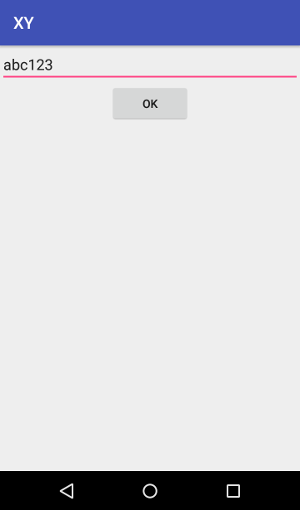

El código del proyecto lo dividí en 3 directorios, conteniendo las partes más
significativas del mismo.
./xy
├── android
├── api
└── web
Android
La aplicación es por ahora sólamente un formulario que solicita un PIN
existente y lo envía a otro Intent. Es el template para que en la siguiente
iteración agregue la comunicación con la API y reporte de errores de la misma.


API
Hasta el momento, la API sólo responde de manera simulada el procesamiento de
los datos que recibe.
Subjects
Representa a las operaciones relacionadas con las personas o cosas que se
desea seguir en la superficie.
~/xy/api$ go run main.go 9090 # terminal 1
~/xy/api$ curl -i -X POST http://localhost:9090/subjects # terminal 2
HTTP/1.1 201 Created
Content-Type: application/json
Date: Sun, 09 Jul 2017 22:26:37 GMT
Content-Length: 91
{"Current":{"Latitude":0,"Longitude":0,"CreatedAt":"0001-01-01T00:00:00Z"},"History":null}
Registration
Es el punto de registro de los dispositivos a seguir. El pin es un valor
alfanumérico que se supone ya creado por la misma plataforma y asociado a un
usuario existente que quiere agregar ese dispositivo. La operación asocia el
mismo con el usuario y provee un ID único para facilitar la entrega de los
datos de localización.
~/xy/api$ go run main.go 9090 # terminal 1
~/xy/api$ curl -i -X POST http://localhost:9090/register --data "pin=1234" # terminal 2
HTTP/1.1 201 Created
Content-Type: application/json
Date: Sun, 09 Jul 2017 22:29:38 GMT
Content-Length: 98
{"success":true,"message":"Successfully created ID.","id":"65336dad-9e7f-4c7a-9f5b-04eeb1a5149c"}
Se hace evidente que /register es un recurso que pertenece a /subjects; lo
moveré en la siguiente iteración.
Web
Se configuró el sistema de template nativo de Go (a forma de prueba de
concepto) y los paquetes NPM a usar en el futuro: Grunt, Bower.